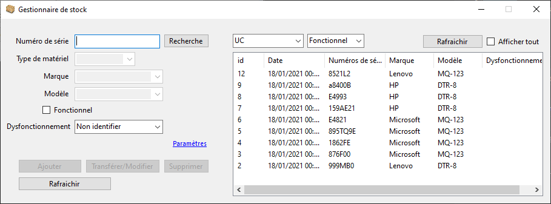
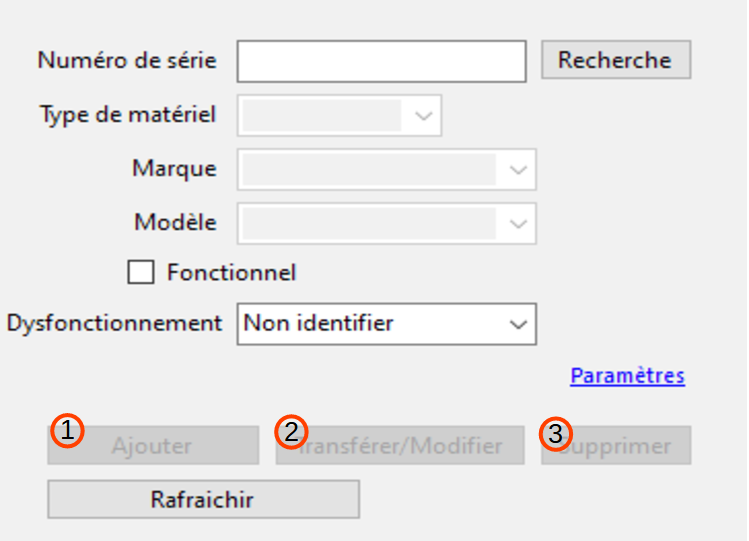
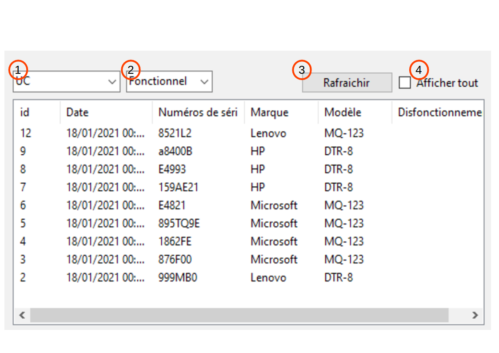
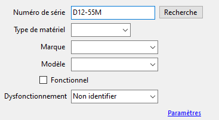
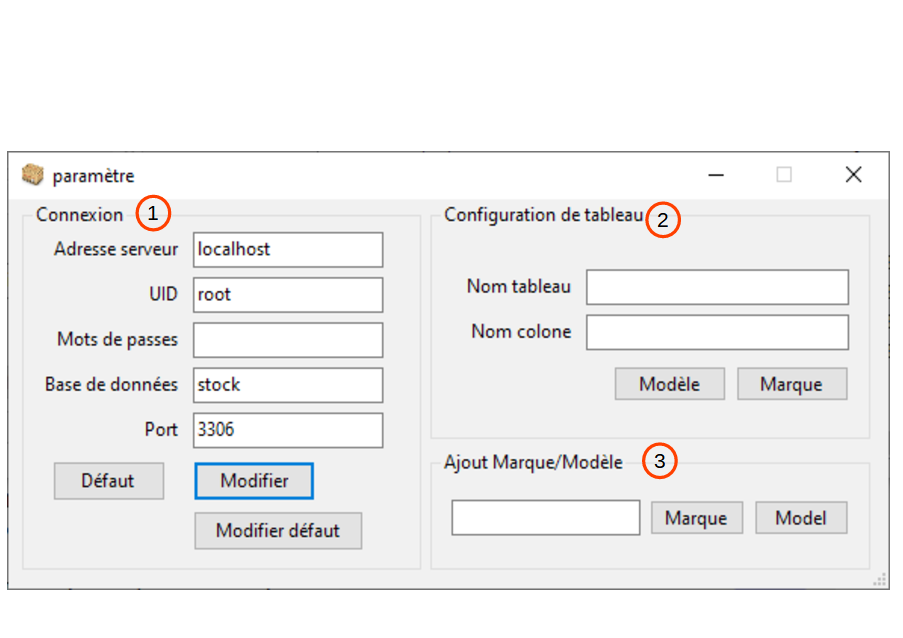

Les fonctionnalités
Une fois connecté à une base de données, ce logiciel a 3 fonctions pour la modifier :
- Ajouter des entrées dans la table de la base de données indiquée. Le numéro de série et le type de matériel doivent être renseignés. Si le numéro de série existe déjà l’ajout sera impossible.
- Transférer les appareils fonctionnels vers les dysfonctionnels et inversement, ou modifier le dysfonctionnement enregistré sur un appareil. Vous devez avoir recherché un numéro de série déjà existant au préalable.
- Supprimer l’entrée correspondant au numéro de série recherché.

De plus, le programme permet de lire les différentes tables de la base de données.
- Choisir le matériel dont on veut voir le stock.
- Choisir les stocks de matériels fonctionnels ou dysfonctionnels.
- Il est nécessaire de rafraîchir le tableau pour voir les modifications après avoir modifié les entrées de 1. et 2.
- Permet de choisir si on veut que toutes les entrées de la table s’affichent. Par défaut, seules les 9 dernières s’affichent.

Le formulaire
Les champs du formulaire se déverrouillent lorsque vous entrez un numéro de série.
Le champ « Type de matériel » doit être rempli car il dit au programme où placer l’entrée.
Les champs « Type de matériel », « Marque », « Modèle » et « Dysfonctionnement » vous offrent une liste.
Le champ « Dysfonctionnel » se verrouille si « fonctionnel » est coché.
Lancer une recherche par numéro de série verrouille les champs « Type de matériel », « Marque », et « Modèle » et rempli automatiquement tous les champs. Toute modification dans le champ « Numéro de série » les déverrouille.

Paramètres
La fenêtre des paramètres s’ouvre en cliquant sur « Paramètres » dans la fenêtre principale. Plusieurs éléments peuvent être modifiés via cette fenêtre :
1- Sert à choisir le serveur et la base de données, ainsi qu’à renseigner vos identifiants. Vous pouvez aussi enregistrer une configuration par défaut pour la connexion.
2- Sert à choisir la table et la colonne dans laquelle le programme ira chercher la liste de marque/modèle.
3- Sert à ajouter des marques/modèles à la liste.
